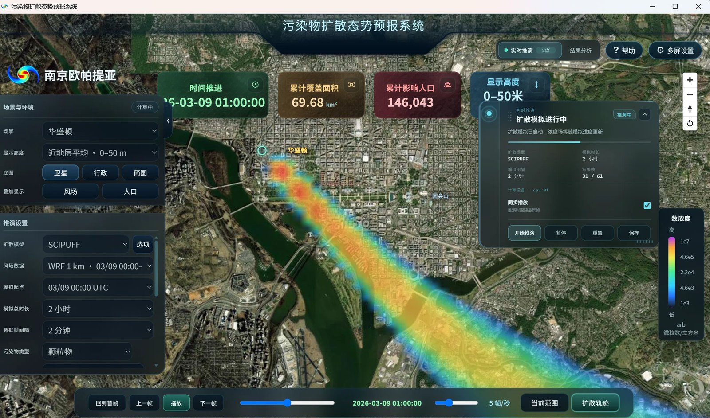
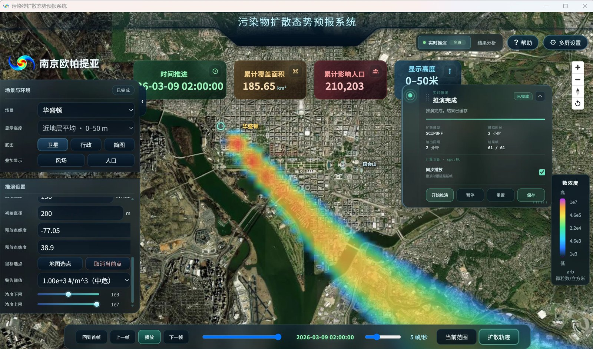

污染物扩散态势预报系统 桌面本地版
污染物扩散态势预报系统：13 城市场景 · WRF 1 km 气象场 · SCIPUFF / Gaussian CPU 双模型 · 源项可调与地图选点 · 覆盖面积与影响人口评估 · 时序推演与离线回放。
本系统面向突发大气污染事件的扩散态势预报：以 WRF 1 km 分辨率气象场驱动， 用原生 SCIPUFF（二阶闭合高斯烟团）与 Gaussian CPU 两套扩散模型做推演， 在卫星底图上以对数色标渲染浓度场，实时给出累计覆盖面积与累计影响人口， 并支持逐帧回放、扩散轨迹与多窗口投屏。软件为桌面本地版（Electron 交付，无需 Python / Node / 编译器）， 内置北京、上海、台北、纽约、华盛顿、伦敦、巴黎、东京、长沙、迪拜、莫斯科、柏林、大阪 13 座城市的完整案例数据（约 25 GB，含气象场、人口栅格、行政边界、核心区建筑、卫星瓦片与预计算算例）， 断网亦可演示与复盘。软件在本机运行，数据不出本机。

主界面（华盛顿场景，推演进行中 51%）：中央为卫星底图上的浓度场羽流（对数色标 1e3–1e7 颗粒物/m³）， 顶部为时间推进、累计覆盖面积、累计影响人口与显示高度四项指标；左侧为场景环境与推演设置， 右侧为推演进度、结果帧计数、计算资源与启停控制，底部为逐帧回放时间轴。

推演完成状态与源项设置：2 小时推演共 61 帧全部完成并已保存；释放点支持经纬度输入与地图点选， 可设初始高度（AGL）与初始直径、警告阈值分级（示例 1e3 #/m³ 中危）与浓度色标上下限。
主要功能
13 城案例包 · 约 25 GB 离线数据 · 2 小时 / 61 帧推演 · WRF 1 km 风场 · SCIPUFF + Gaussian CPU · 8 线程计算 · 示例：累计覆盖 185.65 km² / 影响人口 210,203 人
数据与说明
演示数据为 2026-03-09 起报的 WRF/GFS 1 km 气象场（UTC），各城市案例的时间窗、 高度层与分辨率以随包数据清单为准；浓度场、覆盖面积与影响人口会随气象时段、源项参数与警告阈值变化， 页面截图为华盛顿场景的示例结果。软件当前为 0.6.1 试用版（安装器约 177 MB， 数据包约 6.8 GB、解压后约 25 GB），支持离线结果播放、Gaussian CPU、原生 SCIPUFF 与多窗口展示； 具体功能范围以试用授权为准。